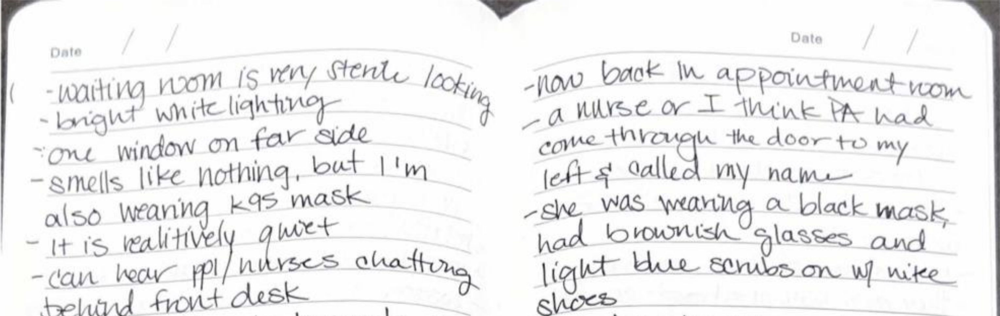
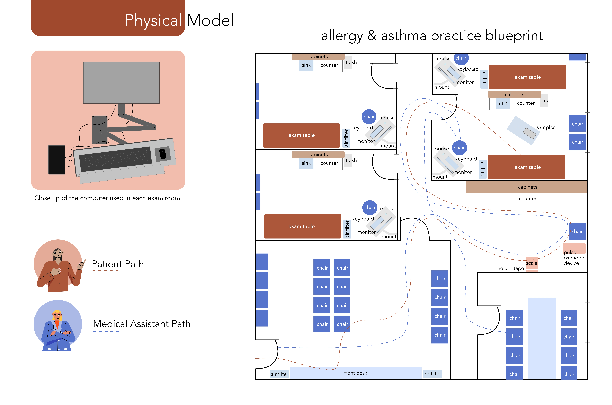
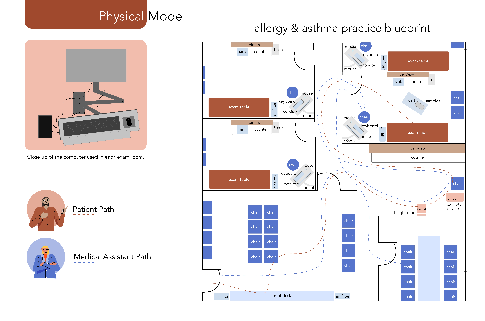

background
For a graduate course, User Needs Analysis, we learned to take a true ethnographic perspective on the real world contexts enables a multi-layered perspective on what the various issues might be before attempting to solve them. I learned how to fully understand a social, technical and organizational setting with all of the numerous complexities that inform how people experience a social and physical environment.
context
For the subject of this course I choose to research an allergy and asthma office. This consisted of three in person observation sessions, along with three 45 minute contextual interviews with medical assistants.
observations
This project began with three in person observation sessions in the allergy and asthma office.
interview protocol
An interview protocol was drafted after the three observation sessions and jotting codings. I used the contextual information that I gathered to help informa the types of questions to ask.
annotated transcripts technique
I then annotated the transcripts from the three interview recordings and noted on my questioning and techniques of interviewing.
annotated transcripts data
Next, I looked at the same transcripts but coded them for data to draw insights off of.
thinking topics
I created thinking topics from the context gathered from the interviews on subjects I could define. My main project focus at this point was defined as "How does communication and coordination happen between medical assistants at an allergy and asthma practice to conduct the multiple courses of procedures for patient care?"
work models
Next I created work models to be a visual representation of the data fround from my ethnographic study. This consisted of physical, collaboration, and sequence models that represent the data points.
 

final report
Finally, I gathered a report with all of my findings and work models. Here are my findings:
No matter how much technology advances, reverting to human intervention and manual processes will always be needed.
The physical space of the practice directly influences the means of communication between medical assistants.
The allergy shot room operates as its own subset of the practice with a hierarchy of medical assistants taking place for the need of a provider.